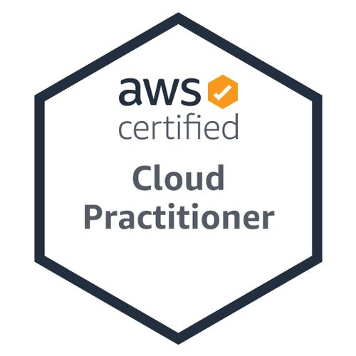

Certifications

AWS Certified Cloud Practitioner

Microsoft Certified: Azure Fundamentals
I'm a DevOps Engineer specializing in designing and implementing scalable infrastructure, CI/CD pipelines, and automation solutions that bridge development and operations.
View My WorksI'm a passionate DevOps Engineer with 3 years of experience architecting cloud solutions that enable teams to deliver software faster and more reliably. My expertise spans across the entire DevOps lifecycle from infrastructure automation to continuous deployment.
I specialize in transforming traditional workflows into modern, automated pipelines that improve efficiency while maintaining security and compliance standards.
April 2022 - May 2025
2019 - 2021
Designed and implemented an automated CI/CD pipeline for Node.js Application with docker stack that reduced deployment time by 35% while improving reliability.
Secured production Kubernetes clusters, achieving 99.99% uptime and compliance with CIS benchmarks.
Provisioned a complete cloud infrastructure stack serving microservices with Terraform, reducing provisioning time from days to minutes.
I'm currently open to new opportunities and interesting projects. Feel free to reach out if you'd like to collaborate or just say hello!